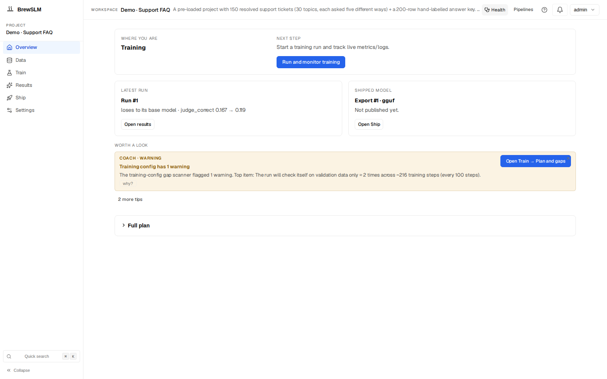
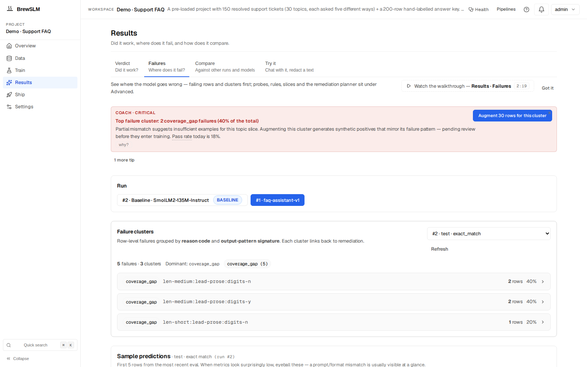

Workspace map: where everything lives
A project has six sections, always in the same order. This page lists what is on each one, with the exact labels, so the click paths in the Academy and the blog can be followed without guessing.
We rebuilt the workspace in late 2026 with one target in mind: the main path from a new project to an export should fit on five screens, and everything else should be one disclosure away rather than one page away. The labels below are the ones in the current web app (frontend/src/utils/workspaceRoutes.ts and the page files). If a label in an older blog post doesn't match, this page wins.
Before a project: the projects page
The home screen lists your projects, a + New Project button and Starter projects: quick demos. There are three demos: Demo · Support FAQ, Demo · Sentiment classifier and Demo · PII / PCI Detector. Open demo creates a project with data, a locked answer key and prepared splits, ready to train; Reset to fresh puts it back. The Support FAQ demo has 150 tickets (30 topics, each asked five ways) and a 200-row answer key.
A new project starts from a brief: a paragraph saying what problem you want solved. BrewSLM derives a name and a recipe from it; you can edit both.
The six sections

| Section | What is on it |
|---|---|
| Overview | Where you are, Next step, Latest run, Shipped model, and a checklist: Bring data in, Prepare, label, split, Train, Check the results, Ship |
| Data | Five steps: Sources, Prepare, Labels, Generate, Split (Labels and Generate are optional) |
| Train | Base model, task, seeds, run name, the Train button, More options, and the Runs list with live metrics |
| Results | Four tabs: Verdict ("Did it work?"), Failures ("Where does it fail?"), Compare ("Against other runs and models"), Try it ("Chat with it, redact a text") |
| Ship | Four stages: Package, Publish, Deploy, Monitor |
| Settings | Appearance, Workspace, Judge model, and a Tools drawer for the things you rarely need |
Data
- Sources: upload files (PDF, Word, HTML, TXT, Markdown; CSV, TSV, Excel, JSON, JSONL, Parquet), import from Hugging Face, Kaggle or a URL, or have a model write sample documents. Row files keep their columns; documents become passages. Each upload asks for its allowed use.
- Prepare: chunk size, PII redaction and page-furniture removal, with a quality score per document.
- Labels: the task shape ("What kind of task is this?"), the label taxonomy, and the answer key every run is scored against, with a practice and a final key.
- Generate: synthetic rows where the data is thin, and relabelling under the current conventions. Rows land in the review queue.
- Split: train / validation / test, Keep the current test examples, and Use my own train / val / test files.
Each step has a Details drawer for the deeper tools: the Readiness overview and provenance under Sources, the answer-key workbench and review queue under Labels, the playbook center under Generate, schema mapping and dataset versions under Split. The checks behind these steps are on the data gates page.
Train
The first screen asks only for the base model (type it, or Browse the registry), the task, one run or three seeds, and a run name. A readiness line says whether it can train. Train creates the run and a confirmation with Launch starts it. More options holds the Common sections (Model and hyperparameters; LoRA and advanced training; Seeds) and an Advanced group: Training mode, Checks, Cloud burst, Training presets, Plan and gaps, the base model registry, task type, pipeline presets, Adapter Studio and tokenization. Defaults are on the training defaults page.
Results
Verdict holds the verdict card, + Score this run (which opens by itself on a finished run with no evals), Check across 3 seeds, and How it's scored, whose Change how it's scored section has the scoring switches and the automatic base-vs-fine-tuned check. Named eval sets and prompt-format variants are under Test sets. Failures groups failing rows into clusters by reason code and output pattern, and offers to generate rows for a cluster. Compare puts two runs or a run and its base side by side. Try it is a playground to chat with the model, plus a box to redact a text. Evaluation decoding (temperature, max new tokens) is set per eval in the Score form's Advanced section; there is no project-wide decoding page. The rules behind the card are on the lift check page.

Ship
Package: pick the run (and, for a seed group, the seed to ship), a format and a quantization, then Run Export. Publish: push a Hugging Face export to the Hub. Deploy: serve plans with launch, health-check and smoke-test commands. Monitor: the run timeline, failures and support bundles. See export formats.
Settings
Appearance (light or dark). Workspace: Show inline tips, Start advanced sections collapsed, Export the project manifest (brewslm.yaml) and Duplicate this project, optionally onto another base model. The Judge model card, with judge calibration. The Tools drawer: Autopilot Planner, Workflow Builder, Domain Packs, Domain Profiles, Extension Studio and Autopilot decisions.
Everywhere
- ⌘K / Ctrl-K (or Quick search in the sidebar) opens a palette that searches every section, step, tab and setting.
- Coach notices sit under the page header on Data, Train, Results and Ship. At most one shows; the rest wait under "N more tips". Turn them off with Show inline tips.
- The bell in the top bar tracks background jobs: generation, training (with a live loss sparkline and a stop button), evals and the lift check with its verdict.
A one-minute tour without a GPU
Start the backend with TRAINING_BACKEND=simulate and ALLOW_SIMULATED_TRAINING=true, then Projects → Open demo on Demo · Support FAQ → Train → Train → Launch. A simulated run walks the pipeline and draws a loss curve in about a minute, but it trains no weights, so Results will have no verdict. That is by design.